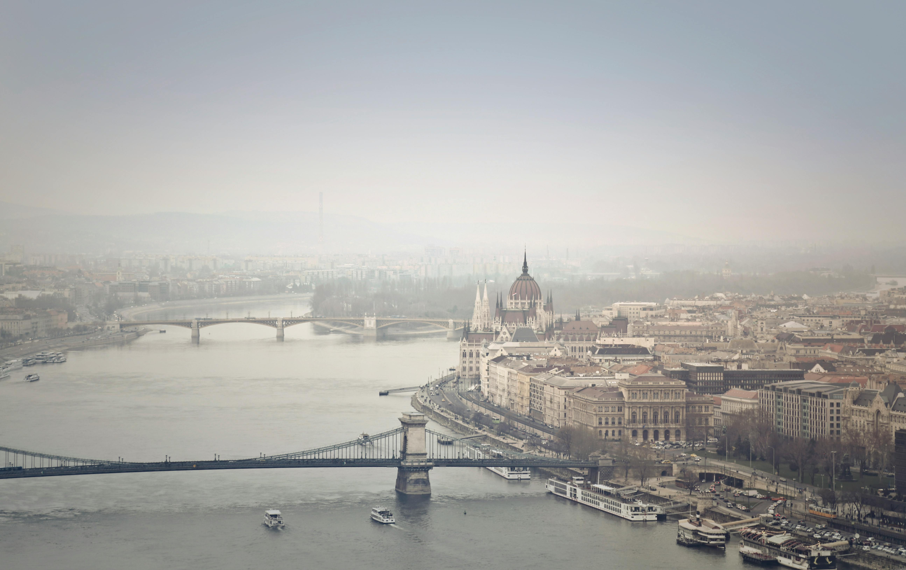

Sve destinacije
Dobrodošli u svijet nevjerojatnih destinacija. Saznajte više o našim omiljenim lokacijama širom svijeta i inspirirajte se za svoje sljedeće putovanje.
Odredite vasu destinaciju.
Barselona

Barcelona, glavni grad Katalonije, poznata je po svojoj arhitekturi inspiriranoj Gaudíjevim djelima, prekrasnim plažama i živahnoj noćnoj sceni.
Budinpešta
Budimpešta, grad na Dunavu, poznat je po svojim termalnim izvorima, prekrasnim mostovima poput Lančanog mosta i bogatoj kulturnoj baštini.
Dubai

Dubai je sinonim za luksuz, moderne nebodere i nevjerojatne trgovačke centre poput Burj Khalife, najvišeg nebodera na svijetu, i Dubaia Mall, najvećeg trgovačkog centra na svijetu.
Pariz

Grad svjetlosti, romantike i umjetnosti, Pariz je jedno od najpoznatijih turističkih odredišta na svijetu. Posjetite Eiffelov toranj, Louvre, Notre-Dame i druga čarobna mjesta koja će vas ostaviti bez daha.
Prag

Prag, poznat i kao "grad stotinu tornjeva", oduševljava posjetitelje svojom bajkovitom atmosferom, starim gradskim trgovima i prekrasnom kraljevskom dvorcu.
Moskva

Glavni grad Rusije, Moskva, poznata je po svojoj bogatoj povijesti, prekrasnim crkvama i impozantnim arhitektonskim spomenicima kao što su Crveni trg i Kremlj.
Instambul

Istanbul, grad koji spaja Europu i Aziju preko Bosfora, poznat je po svojoj bogatoj povijesti, arhitekturi i živopisnoj tržnici Grand Bazaar.
Maldivi

Arhipelag Maldivi sastoji se od preko 1.000 koraljnih otoka koji nude nevjerojatne plaže, tirkizno more i bogat podvodni svijet. Ovo je raj na Zemlji za ljubitelje sunca, mora i ronjenja.
London

Glavni grad Ujedinjenog Kraljevstva, London je dom nevjerojatnih muzeja, povijesnih znamenitosti poput Buckinghamske palače i moderne umjetnosti i kulture.
Cijene putovanja
Pogledajte cijene putovanja za neke od naših omiljenih destinacija.